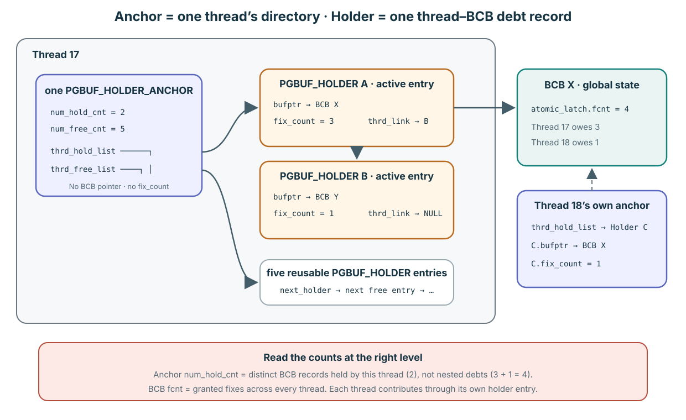
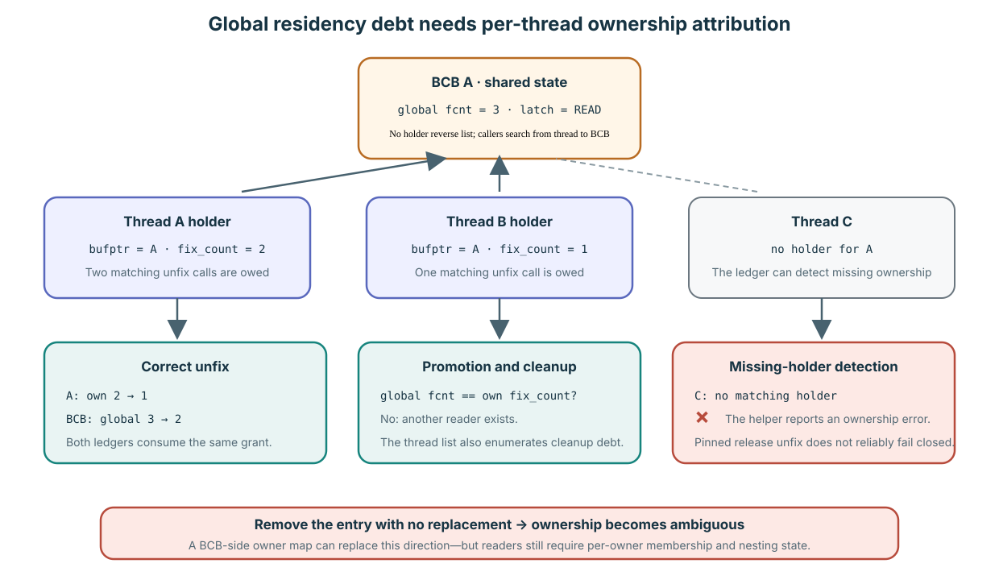
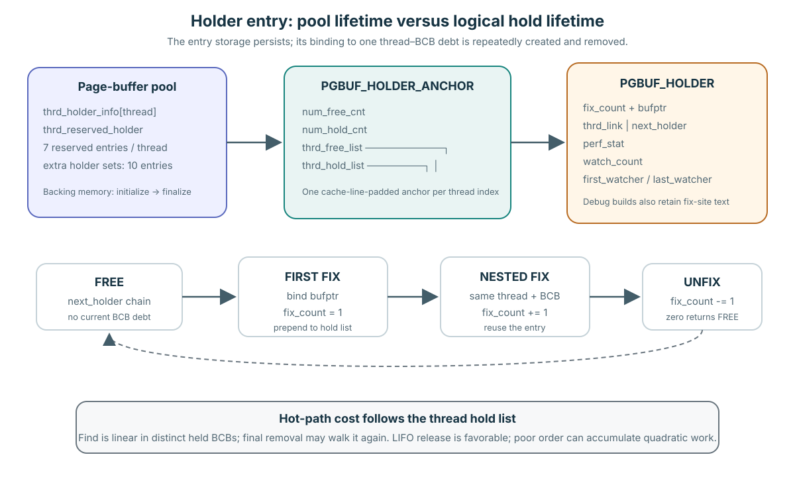

비용, redesign, lifetime 순서로 읽습니다
1. 순회 비용이 커질 수 있습니까?
그렇습니다. 이 thread가 서로 다른 BCB H개를 hold하고 있으면 pgbuf_find_thrd_holder()는 thrd_hold_list에서 시작해 thrd_link를 따라가므로 lookup 하나가 worst-case O(H)입니다. 앞선 page를 release하지 않고 서로 다른 새 page N개를 얻으면 비교 횟수가 N(N−1)/2, 즉 O(N²)로 누적됩니다. 실제 bottleneck이라고 하려면 큰 hold depth와 pgbuf_find_thrd_holder() 또는 pgbuf_remove_thrd_holder()의 profile sample도 함께 보여야 합니다.
2. Redesign할 수 있습니까?
그렇습니다. Per-thread hash, acquisition handle, BCB-side owner map으로 lookup 방향과 비용을 바꿀 수 있습니다. 다만 동일한 <thread_id, fix_count> 정보는 보존해야 합니다. WRITE에는 owner/count 하나가 필요하고 shared READ에는 reader마다 nested count가 필요합니다. Linked list는 없앨 수 있지만 현재 API semantics를 유지하면서 owner attribution까지 없앨 수는 없습니다.
3. 크기와 개수는 얼마이고 얼마나 오래 삽니까?
| 질문 | Pinned 답 |
|---|---|
| Entry 크기 | 일반 64-bit ABI의 release build에서 PGBUF_HOLDER는 56 bytes입니다. Non-release build는 64 KiB fixed_at array를 더하므로 정확한 크기는 build에 따라 달라지고 약 65.6 KiB가 됩니다. |
| Anchor 크기 | PGBUF_HOLDER_ANCHOR는 정확히 64 bytes라는 source static assertion이 있습니다. |
| 초기 개수 | 설정된 thread마다 reserved entry PGBUF_DEFAULT_FIX_COUNT == 7개입니다. |
| 증가와 최대값 | Shared extension set 하나에 PGBUF_NUM_ALLOC_HOLDER == 10개씩 추가합니다. 7과 10은 capacity이지 maximum이 아닙니다. General holder는 allocation failure 또는 바깥 protocol limit까지 증가합니다. |
| Lifetime | Storage는 page-buffer finalization까지 남습니다. Logical thread–BCB binding 하나는 첫 successful fix부터 마지막 matching unfix까지 유지되며 nested fix는 fix_count만 바꿉니다. |
Verified mechanism and inferred cost: layout/constant는 page_buffer.c:86–94,438–497, reservation/expansion은 5922–6086, lookup/removal은 6090–6275에 있습니다. 별개의 ordered-fix save-array limit 64는 317–319,12284–12474에 있으며 general holder maximum이 아닙니다.
Anchor는 list를 소유하고, entry는 thread–BCB 관계 하나를 기록합니다
PGBUF_HOLDER_ANCHOR는 한 thread의 작은 directory입니다. PGBUF_HOLDER는 “이 thread가 이 BCB에 unfix N개를 빚지고 있다”는 재사용 가능한 record 하나입니다.

Anchor 자체는 page를 나타내지 않습니다. 한 thread가 자신의 active entry list와 free entry list에 접근하는 출발점입니다.
| Object | 개수와 field | 의미 |
|---|---|---|
PGBUF_HOLDER_ANCHOR | Thread index마다 하나: thrd_hold_list, thrd_free_list, num_hold_cnt, num_free_cnt. | 그 thread를 active entry와 reusable entry로 안내합니다. BCB pointer나 nested-fix count는 없습니다. |
PGBUF_HOLDER | Thread마다 0개 이상: bufptr, fix_count, thrd_link/next_holder, statistics, watcher. | Active일 때 이 thread를 BCB 하나와 binding하고 해당 BCB에 대한 이 thread의 nested debt를 셉니다. |
Active entry 두 개가 성공한 fix 네 번을 나타낼 수 있습니다
그림에서 Thread 17은 BCB X를 세 번, BCB Y를 한 번 fix했습니다. 서로 다른 active entry가 두 개이므로 anchor의 num_hold_cnt = 2입니다. 하지만 nested debt의 합은 3 + 1 = 4입니다.
num_hold_cnt는 active-list length이지 holder fix_count들의 합이 아닙니다.Thread 18도 BCB X를 fix할 수 있습니다. 그러면 Thread 18의 별도 anchor 아래에 별도 holder가 생깁니다. BCB X의 global fcnt는 두 thread의 grant를 합치고, 각 holder는 자기 thread 몫만 저장합니다.
BCB 주소를 scan하여 기존 holder를 찾습니다
BCB A를 다시 fix할 때 pgbuf_find_thrd_holder(thread_p, bufptr_A)는 현재 thread의 active list를 순회하며 holder->bufptr == bufptr_A인지 비교합니다.
- 현재 thread의 anchor를 찾습니다.
thread_p->m_holder_anchor는&pgbuf_Pool.thrd_holder_info[thread_p->index]를 lazy cache합니다. m_holder_anchor->thrd_hold_list에서 시작합니다.- 각 active entry의
bufptr를 BCB A pointer와 비교합니다. thrd_link를 따라가며 일치하는 entry를 찾거나NULL에 도달합니다.- 일치하면 반복 grant가 성공한 뒤 같은 entry의
fix_count를 늘립니다. 일치하지 않으면 첫 grant 성공 뒤 free entry를 하나 얻어 active-list head에 붙이고,bufptr에 BCB A를 저장하고,fix_count = 1로 설정합니다.
| 경우 | Holder 결과 | Grant 뒤 accounting 결과 |
|---|---|---|
| 같은 thread, 같은 BCB A | 이미 일치하는 같은 entry. | Entry count만 증가하고 active-list length는 그대로입니다. |
| 같은 thread, 다른 BCB B | 같은 anchor 아래 새 active entry. | Active-list length와 BCB B debt가 모두 늘어납니다. |
| 다른 thread, 같은 BCB A | 그 thread의 anchor 아래 별도 entry. | BCB A global fcnt에 두 thread가 모두 포함됩니다. |
Verified mechanism: 정확한 traversal은 pinned page_buffer.c:6090–6126에 있습니다. Normal fix는 6319에서 lookup하고, 6494–6510에서 match count를 늘리며, 6511–6531에서 첫 entry를 할당합니다. Resident READ fast path도 7753–7782에서 같은 match-or-allocate 판단을 합니다.
Global fcnt는 residency를 보호하고, holder는 debt의 주인을 구분합니다
BCB는 “fix가 세 개 있다”는 사실만 알 뿐, Thread A가 두 개, Thread B가 한 개를 소유하고 Thread C는 하나도 없다는 사실을 구분하지 못합니다. Holder가 이 빠진 attribution을 제공합니다.

두 ledger의 합계는 의도적으로 중복되지만 의미는 다릅니다. 하나는 global replacement safety이고 다른 하나는 caller-specific ownership입니다.
| Code가 답해야 하는 질문 | Global state가 말할 수 있는 것 | Holder가 더하는 것 |
|---|---|---|
| 이 BCB를 victim으로 삼아도 되는가? | fcnt > 0이면 ownership이 남아 있으므로 안 된다고 말합니다. | 이 global gate에는 owner identity가 필요하지 않습니다. |
| 이 caller에게 A의 debt가 있는가? | fcnt > 0은 누군가 debt를 소유한다는 사실만 말합니다. | 일치하는 bufptr가 이 thread의 debt를 증명하며, 일치하지 않으면 helper가 ownership error를 보고할 수 있습니다. |
| 이 caller가 nested fix를 몇 개 갚아야 하는가? | fcnt는 모든 thread의 값을 섞습니다. | fix_count 덕분에 unfix 한 번이 이 thread의 grant 하나만 정확히 소비합니다. |
| Promotion할 때 이 reader가 유일한 owner인가? | Global total만으로는 caller의 몫을 분리할 수 없습니다. | Global fcnt와 이 holder의 fix_count를 비교하면 다른 reader가 있는지 알 수 있습니다. |
| Ordered multi-page fixing이 무엇을 다시 방문해야 하는가? | BCB pool 전체를 scan해도 이 thread의 watcher, rank, owner grouping을 보존하지 못합니다. | Thread list가 이 thread의 outstanding BCB binding과 연결된 watcher state를 정확히 열거합니다. |
중요: holder는 완전한 release-build misuse guard가 아닙니다
Caller가 unfix를 누락하면 holder와 global debt가 남습니다. Call site에서 이 실수를 막지는 못합니다. Release build에서는 pgbuf_unfix_all()이 thread list를 request-end cleanup safety net으로 사용합니다. Debug build는 대신 outstanding holder를 assert하고 보고합니다. Cleanup 전까지 leaked fix는 BCB가 replacement 대상이 되지 못하게 할 수 있습니다.
Extra unfix나 wrong-thread unfix는 더욱 주의해서 구분해야 합니다. pgbuf_unlatch_thrd_holder()는 missing entry를 발견해 ER_PB_UNFIXED_PAGEPTR를 반환하지만, pinned ordinary release path는 fail-closed가 아닙니다. Lock-free READ release는 그 status를 받지 않고, protected release는 확인 전에 global fcnt를 감소시킵니다. 마지막 valid unfix 뒤의 옛 PAGE_PTR는 contract상 이미 invalid이며 재사용된 storage를 가리킬 수도 있습니다. 따라서 holder는 ownership information을 드러내지만 double-unfix를 안전하게 만들거나 이 revision에서 state mutation을 확실히 중단시키지는 않습니다.
VS-17로 route합니다.BCB가 holder를 역참조합니까?
아닙니다. BCB에는 global atomic_latch.fcnt, latch/wait state, flag, page identity가 있지만 authoritative holder-thread list는 없습니다. Fix call은 이미 thread_p와 bufptr를 가지고 있으므로 pgbuf_find_thrd_holder(thread_p, bufptr)가 그 thread의 thrd_hold_list에서 시작해 holder->bufptr == bufptr를 비교합니다. 화살표 방향은 thread-owned entry에서 BCB 쪽입니다. Victimization에는 global “fix가 하나라도 남았는가?”만 필요하므로 owner를 열거하지 않고 global fcnt를 읽습니다.
Owner identity를 BCB로 옮길 수 있습니까?
가능하며 정당한 redesign입니다. write_owner_thread_id 하나면 유일한 WRITE owner를 식별할 수 있고, WRITE가 exclusive인 동안 BCB의 global fcnt를 그 owner의 nested total로 볼 수도 있습니다. 이 case에서는 holder lookup을 없앨 수 있습니다.
READ가 더 어렵습니다. 여러 thread가 같은 BCB를 동시에 hold할 수 있습니다. 따라서 existing reader와 new reader를 구분하려면 owner ID 하나가 아니라 BCB-side set이 필요합니다. Nested fix도 계속 허용한다면 reader마다 자기 count가 있어야 합니다. Thread A가 두 번 fix하고 한 번 unfix한 뒤에는 A가 아직 existing reader임을 알아야 하고, 두 번째 unfix 뒤에는 A를 set에서 제거해야 합니다. 따라서 자연스러운 BCB-side record는 <thread_id, fix_count>입니다. PGBUF_HOLDER의 핵심 정보를 반대 방향에 저장하고 index한 것과 같습니다.
| Representation | 좋아지는 점 | 다른 곳으로 이동하는 비용 |
|---|---|---|
| 현재 per-thread list | Thread-local update, ordered-fix 직접 열거, compact common case. | BCB lookup이 이 thread의 held-set depth에 선형이며 BCB는 owner list를 알 수 없습니다. |
| Per-thread hash | Forward ownership 방향을 유지하면서 expected constant-time BCB lookup. | Memory와 lifecycle complexity가 늘고 ordered enumeration을 위한 iteration support가 필요합니다. |
| BCB-side WRITE owner + reader map | Hot BCB에서 owner record로 직접 lookup합니다. | 모든 shared READ fix/unfix가 BCB-owned map을 갱신하므로 shared object에 synchronization, allocation, cache contention이 생깁니다. |
| Explicit acquisition handle | Search 없이 exact acquisition 하나를 unfix할 수 있습니다. | PAGE_PTR-only API를 바꾸며 re-entry, promotion, ordered watcher에는 여전히 aggregation이 필요합니다. |
전체 consumer survey에서 확인한 것
| Consumer | Release-build 용도 | 중요도 |
|---|---|---|
| Normal latch grant와 blocking promotion | Holder 존재를 검사하고 fix_count를 비교·차감하며, entry를 잠시 제거했다 wakeup 뒤 다시 만듭니다. | 현재 general fix protocol의 core behavior입니다. |
| Ordered fix/callback | Held page를 열거하고 release/re-fix 사이에 watcher, rank, latch mode, nested count를 보존합니다. | 해당 specialized multi-page protocol의 core behavior입니다. |
| Allocation progress priority | pgbuf_is_thread_high_priority()가 held BCB를 scan해 waiter가 있거나 중요한 hot page type인지 확인합니다. | Basic ownership correctness가 아니라 progress policy입니다. |
| Dirty와 unfix performance accounting | 이 owner가 page를 dirty로 만들었는지와 사용한 latch mode를 추적합니다. | Observability입니다. Metric을 없애거나 redesign하면 제거할 수 있습니다. |
| Request-end cleanup | pgbuf_unfix_all()이 남은 entry를 순회합니다. | 자체 comment가 말하는 legacy safety net이며 primary design reason이 아닙니다. |
| Fix-site string, pointer validation, assertion | Non-release/debug configuration에서만 compile됩니다. | Holder core field와 달리 debug-only addition입니다. |
Code에는 이미 holder-free 반례가 있습니다
pgbuf_simple_fix()와 pgbuf_simple_unfix()는 global fcnt만 갱신합니다. Source warning은 이 protocol을 temporary-file read로 제한하고, write가 있으면 unsafe할 수 있으며 general FIX/latch와 혼용하면 안 된다고 합니다. 이는 frame 하나를 resident로 유지하는 데 holder가 본질적으로 필요한 것은 아님을 증명합니다. 동시에 포기해야 하는 것도 보여 줍니다. General READ/WRITE latch ownership, re-entry/promotion semantics, ordered watcher, owner attribution입니다.
fcnt로 충분합니다. 현재 general fix API에는 자신이 약속한 semantics 때문에 per-owner state가 필요합니다. 이 state의 위치와 형태는 바꿀 수 있지만 semantics를 그대로 둔 채 삭제할 수는 없습니다.pgbuf_unfix_all()은 자체 source comment가 말하는 legacy request-end safety net일 뿐 holder의 주된 정당화가 아닙니다.Verified mechanism: grant, re-entry, waiter barging, promotion은 pinned page_buffer.c:6312–6537에서 caller ownership을 사용합니다. Missing-holder detection과 nested decrement는 6128–6184에 있고, ordinary unfix flow는 pgbuf_unfix()와 global decrement인 6636–6703입니다. Holder-free simple fix는 page_buffer.c:2688–2811로 제한되며 progress classification은 11705–11785에 있습니다. Legacy cleanup comment와 enumeration은 pgbuf_unfix_all(), 동일한 thread list와 watcher record를 사용하는 ordered fixing은 pgbuf_ordered_fix()부터 시작합니다.
같은 entry storage가 list와 link field를 바꿉니다
| Entry state | 소속 list | 사용하는 link | BCB 의미 |
|---|---|---|---|
| Active | thrd_hold_list | thrd_link; next_holder == NULL | bufptr와 양수 fix_count가 live debt를 나타냅니다. |
| Reusable | thrd_free_list | next_holder | 현재 thread–BCB ownership 관계가 없습니다. |
Allocation은 free-list head를 pop하고 hold-list head에 prepend합니다. 이 constant-time insertion 때문에 holder에는 안정적인 ordinal position이 없습니다. 이후의 first-time fix가 새 entry를 그 앞에 놓을 수 있습니다.
마지막 unfix는 active binding을 제거합니다

Entry는 재활용되고, 하나의 논리적 thread–BCB binding은 일시적입니다.
Initialization은 각 thread에 reserved free entry 일곱 개를 줍니다. 64-byte anchor는 cache-line 크기이고, 일반 64-bit ABI의 release holder는 56 bytes이며 non-release fix-site tracking은 64 KiB를 더합니다. Free list를 모두 쓰면 shared extension set에서 열 개 단위로 만든 entry를 얻습니다. 7과 10은 모두 maximum이 아닙니다. 첫 successful fix가 entry 하나를 active로 만들고, 반복 successful fix마다 count가 늘어납니다. Matching unfix마다 count가 줄고 0이 되면 active list에서 unlink하여 그 thread의 free list head로 돌려보냅니다. 그 전에 watcher는 모두 detach되어 있어야 합니다.
Verified mechanism: initialization과 allocation은 page_buffer.c:5922–6086, 마지막 debt 제거와 recycling은 6128–6275에 있습니다. Backing holder storage는 일반 unfix가 아니라 page-buffer finalization에서 회수합니다.
아주 느려질 수 있나요? 한 thread가 서로 다른 page를 많이 hold하면 그렇습니다
H를 이 thread가 현재 hold 중인 서로 다른 BCB 수라고 하겠습니다. Buffer-pool size, lifetime fix count, nested debt의 합이 아닙니다. Active list에는 BCB-to-holder index가 없으므로 entry position이 작업량을 결정합니다.
| Operation | Holder-list cost | 이유 |
|---|---|---|
| 새로운 distinct BCB의 첫 fix | 최대 O(H) | 기존 entry가 없음을 증명하려면 lookup이 NULL까지 가야 하며, 그다음 allocation이 새 entry를 prepend합니다. |
| 이미 hold한 BCB의 반복 fix | O(1)에서 O(H) 사이 | Entry는 재사용하지만 먼저 찾아야 합니다. Head entry일 때만 즉시 저렴합니다. |
| Debt가 남는 unfix | 최대 O(H) | 같은 linear lookup으로 entry를 찾은 뒤 count를 줄입니다. |
| Head가 아닌 entry의 마지막 unfix | 최대 두 번의 scan | Lookup이 entry를 찾고, removal이 predecessor를 찾으려고 head부터 다시 시작할 수 있습니다. |
Worst-case 누적 비용
이전 page를 release하지 않은 채 서로 다른 page A, B, C, …, N을 fix하면 새 entry를 만들기 전에 0, 1, 2, …, N−1번의 failed comparison이 발생합니다. 합은 N(N−1)/2이므로 O(N²)입니다. 나중에 page를 유리한 LIFO 순서로 release하더라도 이 acquisition cost는 이미 발생했습니다.
각 새 entry를 prepend하므로 release 순서도 비용을 바꿉니다. LIFO release는 head를 반복 제거하므로 유리합니다. 오래된 entry부터 release하거나, newer entry가 앞에 많이 남은 동안 older entry를 반복 접근하면 매번 긴 list를 건너 또 다른 quadratic pattern을 만들 수 있습니다.
그렇다고 자동으로 production bottleneck은 아닙니다
- List는 thread-local이므로 traversal은 cross-thread list-lock contention이 아니라 CPU/cache work입니다.
H가 작으면 linear scan도 짧습니다. Thread마다 reserved entry가 일곱 개라는 사실은 simultaneous distinct hold가 적은 common shape를 예상한 설계와 일치하지만, hard limit나 성능 증거는 아닙니다. Extension set이 더 많은 entry를 제공합니다.- Head에 있는 한 BCB의 nested fix는 list를 늘리지 않으며
O(1)입니다. 이후 더 새로운 distinct entry가 앞에 prepend된 경우에만 같은 BCB를 찾는 비용이 커질 수 있습니다. - I/O, BCB atomic-latch contention, BCB mutex wait, wakeup, LRU work, flush가 elapsed time을 지배할 수도 있습니다.
H, 불리한 ordering, pgbuf_find_thrd_holder() 또는 pgbuf_remove_thrd_holder()의 상당한 sample이 함께 보여야 합니다. 여러 thread가 BCB 하나를 fix하는 경우에는 그 BCB의 shared atomic latch contention이라는 다른 가설이 생깁니다.Verified mechanism, inferred cost: find/decrement/remove는 page_buffer.c:6090–6275, normal fix의 find와 match-or-allocate branch는 6319,6494–6531에 있습니다. Complexity는 이 singly linked control flow에서 도출됩니다. Production workload에서 지배적인 비용임을 증명하는 Runtime observation은 이 문서에 없습니다.
A×3을 holder scan과 fix count로 설명합니다
문제
한 thread가 현재 BCB B를 hold하며, 이어 BCB A를 세 번 성공적으로 fix합니다. Grant마다 active list가 어떻게 되는지, A lookup이 어떻게 동작하는지, num_hold_cnt와 A의 fix_count가 각각 무엇을 뜻하는지, 세 번째 matching unfix에서 무엇이 일어나는지 설명하세요.
Match 하나와 miss 하나를 추적합니다
page_buffer.c:6000–6126을 읽고 6494–6531의 두 branch를 따라가세요. 종이에 A의 첫 fix, B의 첫 fix, A의 반복 fix 뒤 anchor와 list를 각각 그립니다.